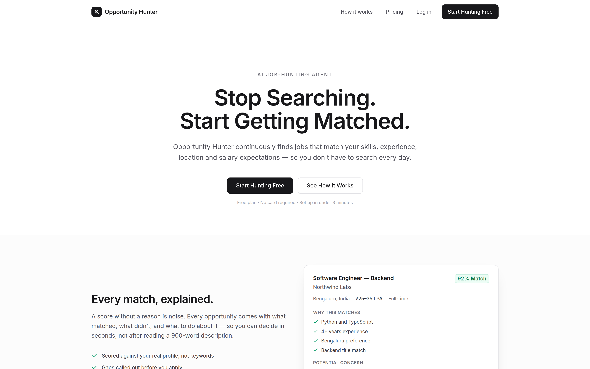
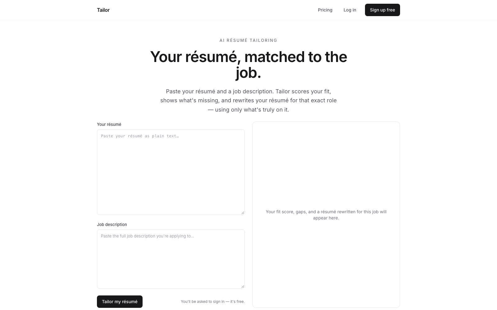
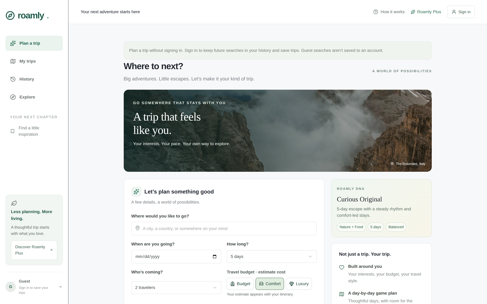

Present
Technology Consultant · Deloitte
Advise on technology delivery for client programmes: how systems get designed, built, and handed over. The consulting work is confidential; the public proof of how I engineer is in the products below.
Developer · Bengaluru
I design, build, and ship software products.
By day I consult on technology at Deloitte. The rest of the time I take products from idea to production — matching, quotas, auth, billing, and the parts that have to stay honest.
About
I’m an experienced software developer with expertise in building products from idea to production. I build full-stack applications with intuitive interfaces, reliable backend systems, and practical features that solve real problems.
The work I publish under my own name is product engineering, not a gallery of unfinished experiments. Opportunity Hunter and Tailor are live, and Roamly is early access. All are full-stack TypeScript apps I designed and implemented.
I like the intersection of product and platform: a score you can explain, a daily quota that cannot be bypassed in the client, a payment webhook that still grants access if the tab closes. That is the standard I hold my own shipping to.
Experience
Present
Advise on technology delivery for client programmes: how systems get designed, built, and handed over. The consulting work is confidential; the public proof of how I engineer is in the products below.
2026 — now
Ship two public products from zero: a job-discovery agent with scoring, sessions, alerts, and Razorpay billing on a long-lived Node host; and a trip planner on Cloudflare with streaming AI, D1 persistence, and fail-closed usage limits.
Projects

A job-hunting agent: you describe the role you want, it keeps searching licensed listings, scores each one 0–100 against your profile, and tracks saved → applied → offer.
Job boards dump undifferentiated lists. People re-search the same query every day, then lose track of what they already opened. The product needed a profile, a repeating hunt, an explainable score, and a tracker — not another scrape of LinkedIn.
Source adapters (JSearch) feed a shared pool. A deterministic scorer weighs skills, role, experience, location, and salary, then writes a plain-English explanation — upgraded with a semantic layer so matching reads meaning, and a re-ranker that learns from what you save, apply to and reject. Server actions enforce a 15-match weekly free cap. Pro is a 30-day Razorpay pass with webhook recovery. SQLite on a persistent disk; hunts on a cron, not a serverless hope.
Matching grew in layers. First, semantic matching: skills, roles and descriptions are embedded once via Voyage, cached in SQLite and compared by cosine similarity — the hot scoring loop stays synchronous and pure by warming the cache up front, not calling the network per job. On top of that, a preference re-ranker that learns from behaviour: it builds a “taste” vector from the embeddings of listings you saved or applied to, minus the ones you rejected, and nudges the ranking toward it — implicit-feedback learning-to-rank, with the base score kept deterministic and explainable. All of it degrades cleanly to exact-text matching with no API key, and cross-domain guards keep a doctor’s profile off developer roles.
Next.js 15 App Router, TypeScript, Tailwind, better-sqlite3, hand-rolled sessions, optional Google OAuth, Resend/SMTP, Razorpay, RapidAPI JSearch, Voyage embeddings. Matching is deterministic and testable with an optional semantic layer; Claude drafts a profile from an imported résumé.

Paste a résumé and a job description; Tailor returns an honest fit score, the gaps, and a résumé rewritten for that exact role — using only what's genuinely on it.
People send the same résumé to every posting and get filtered out because it doesn't speak the job's language. Tailoring by hand for each role is slow, and most tools happily invent experience — which backfires in interviews.
A 0–100 fit score with a one-line verdict, the matched strengths, the missing or underplayed gaps, and a résumé rewritten to the role — constrained to facts already in the original. Accounts, a free-tier quota and a Razorpay Pro pass are built in.
Built by reusing Opportunity Hunter's engine — auth, SQLite, billing, Anthropic setup — pointed at a sharper problem. Claude returns one delimited response (a small header plus the résumé); a streaming route forwards the text deltas and the client parses them as they arrive, so the score and gaps show in seconds while the résumé writes in live. Input is treated as data, never instructions.
Next.js 15 App Router, TypeScript, a streaming route handler, Claude (Sonnet), better-sqlite3, hand-rolled sessions, Razorpay.

An early-access planner that turns destination, dates, budget, and pace into a day-by-day itinerary. It does not pretend to take payments or confirm hotel inventory.
Generic chat itineraries invent opening hours and prices. A planner people might trust has to bound the model, store history per owner, and send stays out to Airbnb instead of scraping listings.
Streaming generation with Zod-validated days, trip DNA and packing cues, heuristic cost bands, owner-scoped D1 trips and search history, and a Plus waitlist that records interest only. AI is fail-closed without key, model, and monthly ceiling; failed attempts still consume quota so retries cannot burn spend.
Roamly runs as a single Cloudflare Worker over D1. The hard constraint is cost, so generation is gated by an atomic per-user daily and global monthly budget written in one SQL statement — charged on attempt, so a retry loop cannot drain spend, and fail-closed when unconfigured. Claude’s output streams to the UI and is Zod-validated both in and out, and every query is owner-scoped so no trip is reachable by ID alone. Untrusted input is passed as data, never instructions.
Next.js on vinext / Cloudflare Workers, D1 + Drizzle, Anthropic, optional Supabase Google and email OTP beside ChatGPT Sites identity, destination directory, and redirect-only Airbnb search.
Contact
For consulting conversations, collaborations, or a closer look at either product, email is the fastest. LinkedIn if you prefer a thread.